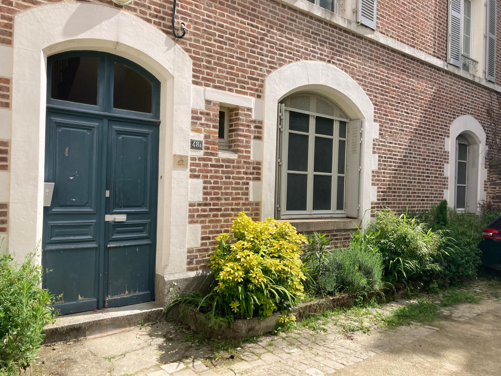
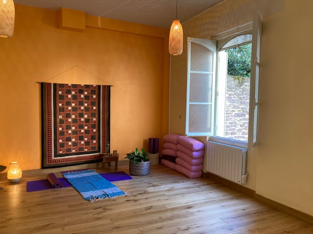
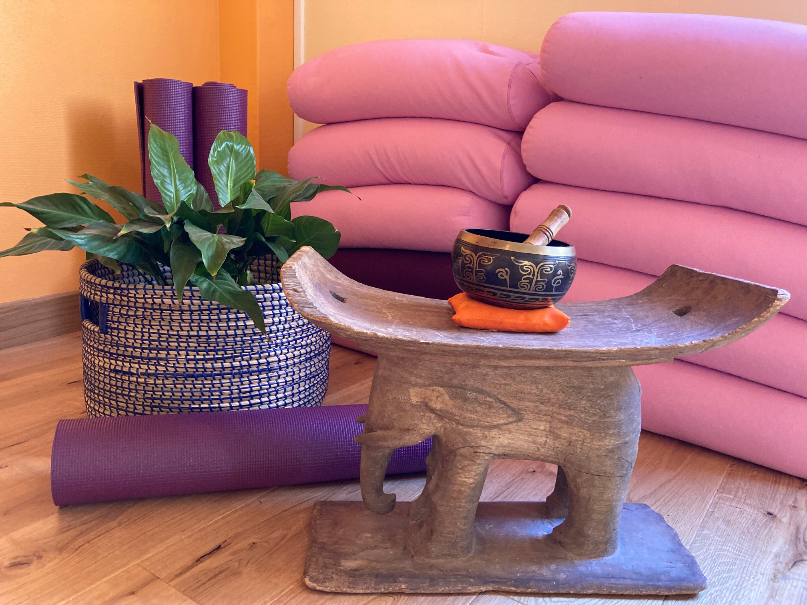

basialepape@gmail.com
06 79 10 25 72
Espace Devi 48A, rue d'Antrain
(en face du Lycée St Martin)



|
Espace Devi,
situé au coeur de la ville de Rennes est un lieu de pratique de Yoga et disciplines de bien-être.
Les cours ont lieu en petits groupes,
dans un cadre agréable et chaleureux,
sous les bons auspices de Saraswati,
la déesse des arts et de l'apprentissage.
|

